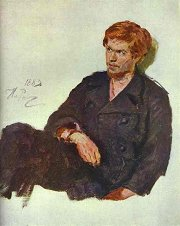

Repin: M.P.Musorgskij
Perov: Tulák

Kramskoj: Dívka s vypranım prádlem
|
RUSKİ REALISMUS
Reformám, které se prosazovaly v západní Evropì, se Rusko dlouho vyhıbalo a øadu z nich nezavedlo vùbec. Nevolnictví zde bylo zrušeno a roku 1861 a první státní duma (obdoba parlamentu) byla svolána a v roce 1906.
Prùkopníkem realismu v ruském malíøství byl Vasilij Perov. V 70. letech se zformovala skupina peredvinikù. Jejími èleny byli portrétista Kramskoj, sbìratel Trejakov, kritik Stasov a øada vıtvarníkù. K nejvıznamnìjším ruskım malíøùm patøí Ilja Jefimoviè Repin a Vasilij Vasiljeviè Verešagin. Kramskoj, Polenov, Vasnestov a Surikov se vìnovali historickım námìtùm, Savrasov a Levitan krajinomalbì.
Stasov byl rovnì mluvèím skupiny hudebních skladatelù Mocná hrstka (Musorgskij, Rimskij-Korsakov...), která navazovala na tvorbu M.I.Glinky.
Ruská inteligence se dìlila na zapadniky (stoupence evropskıch zvyklostí) a slavjanovily (poèvence). Poèvenièestvo byl myšlenkovı smìr, kterı hlásal spojení intelektuálù s rolníky (poèva = pùda) a návrat k venkovskému zpùsobu ivota, èím se chtìl vyhnout kapitalistické zhoubì. Poèvenci vydávali èasopisy Vremja (Èas) a Epocha a patøili k nim napøíklad bratøi Dostojevští.
Nejvıznamnìjší ruští realisté se hlásili k tzv. naturální škole (Ostrovskij, Turgenìv, Nìkrasov, Šèedrin, Gonèarov, Dostojevskij, Tolstoj), jejím teoretikem byl Vissarion Grigorjeviè Bìlinskij. Zajímali se o odvrácené stránky ivota, spoleèenskou spodinu, sociální a psychickı útlak. Po francouzském vzoru psali fyziologické èrty. Publikovali v èasopisech Otìèestvennyje zapiski (Vlastenecké zápisky) a Sovremenik. Velmi oblíbenou literární postavou byl zbyteènı èlovìk, kterı se nedokáe prosadit v osobním ivotì ani ve spoleènosti, pøestoe k tomu má všechny pøedpoklady.

Repin: Burlaci na Volze
|

Polenov: Vesnice Turgenìvo
Verešèagin: Smrtelné zranìní
Perov: Trojka
|
Lev Nikolajeviè Tolstoj
(1828-1910)
Tolstoj pocházel ze šlechtické rodiny. Hospodaøil na svém panství v Jasné Poljanì. Neúspìšnì se pokoušel studovat orientalistiku. Bojoval v krymské válce. Byl pedagogickım reformátorem a stoupencem „volné vıchovy“. Od 80. let il po vzoru muikù. Pod vlivem myšlenek Petra Chelèického vytvoøil uèení, jeho základem bylo neodporování zlu a mravní sebezdokonalování. Za své názory byl vyobcován z pravoslavné církve.
Do literatury vstoupil autobiografickou trilogií Dìtství, Chlapectví a Jinošství. Proslavily ho romány Vojna a mír, Anna Kareninová a Vzkøíšení.
Ve kterém románì vystupuje Vronskij?
Zjisti, které reformy se Tolstoj snail uvést v ivot.
Co se ti líbí a nelíbí na jeho pedagogickıch projektech?

Levitan: Jarní povodeò
|
Lev Nikolajeviè Tolstoj: Vojna a mír
Románová epopej Vojna a mír se odehrává v letech 1805 a 1820 a velkou èást dìje tvoøí líèení Napoleonova vpádu do Ruska. Z 250 hlavních postav patøí k nejdùleitìjším Andrej Bolkonskij, kterı je zranìn v bitvì u Slavkova, bojuje u Borodina a nakonec umírá, a Pierre Bezuchov, kterı hledá naplnìní ivota mezi zednáøi. Povahy obou šlechticù jsou znaènì protikladné. Energickı Bolkonskij zprvu obdivoval Napoleona, ale kdy zail váleèné útrapy, svùj názor zmìnil. Snílek Bezuchov chce naopak Napoleona odstranit. Oba se ucházejí o Natašu Rostovovou, která dá pøednost Bezuchovovi.
Dìj románu doplòují úvahové pasáe. Tostého náhled na svìt reprezentuje pøedevším postava filozofa Platona Karatajeva. Nìkteré dialogy probíhají ve francouzštinì – jazyku ruské spoleèenské smetánky.
Repin: Tolstoj orající pole
|
Repin: Tolstoj
Co víš o Napoleonovì taení do Ruska?
Co si myslíš o válkách mezi národy?

Verešèagin: Apoteóza války
Verešèagin: Noèní tábor Neporazitelné armády
|
Ivan Sergejeviè Turgenìv (1818-1883)
Turgenìv pocházel z bohaté šlechtické rodiny. Studoval v Nìmecku. Za zveøejnìní nekrologu na Gogola byl vypovìzen na rodnı statek. S francouzskou pìvkyní Paulinou Viardotovou il v Paøíi, kde se spøátelil s Flaubertem a Zolou. Turgenìv napsal cyklus povídek Lovcovy zápisky, prózy Deník zbyteèného èlovìka, Asja nebo První láska a romány Šlechtické hnízdo, Pøedveèer nebo Otcové a dìti.
|
Ivan Sergejeviè Turgenìv: Lovcovy zápisky
Rámec 25 èrt Lovcovıch zápiskù tvoøí lovecké toulky vypravìèe a jeho pomocníka Jermolaje. Jádrem tohoto cyklu próz jsou portréty statkáøù (Šafáø), nevolníkù (Pìvci) a dalších obyvatel ruského venkova (Okresní lékaø).
Tradice øíká, e se ruskı car rozhodl po pøeètení této knihy zrušit nevolnictví.
|
Charakterizuj hlavní postavy.
Co tì na ukázce zaujalo?
Co nového ses z ukázky dozvìdìl/a?
|
Ivan Alexandroviè Gonèarov (1812-1891)
Gonèarov byl synem bohatého statkáøe. Pracoval jako cenzor na ministerstvu národní osvìty. Zúèastnil se plavby kolem svìta. Léèil se v Mariánskıch Lázních, kde dokonèil román o „zbyteèném èlovìku“ Oblomov.
Polenov: Zlatı podzim
|
Ivan Alexandroviè Gonèarov: Oblomov
Hlavní postavou Gonèarovova románu je statkáø Oblomov, kterı ije v Petrohradì z vıtìkù svého majetku. Je pomalı a naprosto pasivní. Vìtšinu èasu tráví na svém divanu a nechává se opeèovávat oddanım sluhou. Jeho pøíbytek pokrıvá prach a pavuèiny. Ze snìní ho vytrhne a podnikavı a energickı pøítel Štolc a seznámení s Olgou Iljinskou, do ní se zamiluje. Oblomov ale vše pokazí. Olga ho opouští a provdává se za Štolce. Hlavní hrdina opìt upadá do letargie a nakonec umírá.
|
Kramskoj: Gonèarov
Je Oblomov kladnı nebo zápornı hrdina? Proè?
Srovnej charaktery Oblomova a Štolce.
Co je oblomovština?
|
Fjodor Michajloviè Dostojevskij (1821-1881)
Dostojevskij byl synem lékaøe. ivil se literaturou a své romány diktoval stenografce, která se stala jeho enou. Za údajné veøejné ètení otevøeného dopisu Bìlinského Gogolovi, které se uskuteènilo v krouku Petraševského, byl odsouzen k trestu smrti! Na poslední chvíli dostal milost a èekaly ho „pouze“ nucené práce a vojenská sluba na Sibiøi, kde strávil 9 let. Dostojevskij je povaován za zakladatele psychologické prózy. Napsal naturalistické romány Zloèin a trest, Idiot, Bìsi a Bratøi Karamazovi (Legenda o velikém inkvizitorovi) nebo kratší prózy Zápisky z Mrtvého domu, Zápisky z podzemí a Hráè.
Jaká je základní zápletka románu Bratøi Karamazovi? O èem pojednává Legenda o velikém inkvizitorovi?
Ve kterém románì vystupuje kníe Myškin?
|
Fjodor Michajloviè Dostojevskij: Zloèin a trest
Hlavní postavou románu Zloèin a trest je petrohradskı student Raskolnikov, kterı se ocitne v tìké finanèní i ivotní situaci. Rozhodne se ji øešit promyšlenou vradou staré lichváøky. Pøestoe ji povaoval za „lidskou veš“, není schopen unést bøímì svého èinu. Svìøuje se prostitutce Sonì Marmeladové, která mu radí, aby se sám udal. Raskolnikova podezøívá policejní inspektor, ale nemá jasné dùkazy. Student se nakonec pøizná a je odsouzen k nucenım pracím na Sibiøi, kam ho doprovází i Soòa.
Další realisté a jejich díla
M.J.Saltykov-Šèedrin: Dìjiny jednoho mìsta, Golovlevské panstvo
N.N.Nìkrasov: Kdo ije šastnì na Rusi, Ruské eny, Pláè dìtí
N.S.Leskov: Lady Macbeth mcenského újezdu
N.V.Gogol: Mrtvé duše, Pláš, Revizor, enitba
A.P.Èechov: Pavilón è. 6, Strıèek Váòa, Tøi sestry, Višòovı sad, Racek |

Perov: Dostojevskij
Co si myslíš o èinech Raskolnikova?

Repin: Student-nihilista
|
Internetové stránky
Ruští malíøi 19. století
Repin, obrazy
Verešèagin, obrazy
Ruská literatura
Russian Realism
Publiènaja elektronnaja biblioteka, Tolstoj, Turgenìv, Gonèarov, Dostojevskij...
Tolstoj
Švankmajer: Vojna a mír, èlánek
Turgenìv
Turgenìv
Dostojevskij
Dostojevskij: Zápisky z podzemí, Bílé noci
Perov, obrazy
Savrasov, obrazy
Kramskoj, obrazy
Levitan, obrazy
Surikov, obrazy
Polenov, obrazy
Exkurze
Trejakovská galerie, Moskva
Ermitá, Petrohrad
Ermitá, Petrohrad
|
Doporuèená èetba
Bachtin, M.: Dostojevskij umìlec, Praha 1971
Bursov, Boris: Dostojevskij a jeho svìt, pøel. J.ák, Odeon, Praha 1978
Dolanskı, J.: Mistøi ruského realismu u nás, Praha 1960
Dostojevskij, Fjodor Michajloviè: Zloèin a trest, pøel. J.Hulák, Lidové nakladatelství, Praha 1977
Gonèarov, Ivan Alexandroviè: Oblomov, pøel. P.Voskovec, Melantrich, Praha 1973
Honzík: Dvì století ruské literatury, Praha 2000
Jehlièka, M.: Lev Tolstoj – vypravìè a vizionáø, Praha 1999
Kautman, F,: Boje o Dostojevského, Praha 1966
Legenda o velikém høíšníkovi, ivot F.M.Dostojevského, pøel. Zadrailovi, Lidové nakladatelství, Praha 1972
Lev Nikolajeviè Tolstoj jak ho vidìl..., pøel. M.Jedlièka, Praha 1978
L.N.Tolstoj a jeho pedagogickı odkaz, Praha 1982
Masaryk, Tomáš Garrigue: Rusko a Evropa
Nešpor, Pavel: L.N.Tolstoj, Orbis, Praha 1971
Panoráma ruské literatury, Albert, Boskovice 1995
Parolek, Radegast: F.M.Dostojevskij, Orbis, Praha 1964
Pospíšil, I.: Fenomén šílenství v ruské literatuøe 19. a 20. století, Praha 1995
Pospíšil, I.: Ruskı román, Praha 1998
Spisy Fjodora Michajlovièe Dostojevského (14 svazkù)
Spisy Ivana Alexandrovièe Gonèarova (6 svazkù)
Spisy Ivana Sergejevièe Turgenìva (10 svazkù)
Spisy Lva Nikolajevièe Tolstého (26 svazkù)
Tolstoj, Lev Nikolajeviè: Vojna a mír (2 svazky), pøel. Sıkorovi, Odeon, Praha 1969
Turgenìv, Ivan Sergejeviè: Lovcovy zápisky, pøel. A.Nováková, Odeon, Praha 1989
Turgenìv, I.S.: První láska a jiné povídky, pøel. Dušková, Hašková, Mladá fronta, Praha 1986
Turgenìv, I.S.: Vzpomínky na literaturu, pøel. Honzík, Sıkorová, Odeon, Praha 1985
Turgenìv, I.S.: Záhadné povídky, Praha 1990
Zahrádka, M.: L.N.Tolstoj a ruská próza, Praha 1996
|
Vypracuj písemnı referát o nìkteré z uvedenıch knih.

Repin: Ivan Hroznı a jeho syn

Surikov: Staøec
|
|